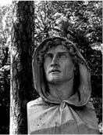
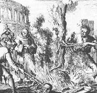

Abese İsyan Silahı Olarak Mantık
1150 yılında, Papa İkinci Innocentius’un akıl hocası ve baş danışmanı Gratianus’un on yıldır yazdığı “Kilise İçtihat Hukuku” külliyatı tamamlanmıştı. Kâtip rahipler eseri elyazısıyla çoğaltmaya başladıklarında, Gratianus’un Büyük Konstantin’in sahte vasiyetini ve zaten bu vasiyete dayanarak üretilen Sahte Papalık Fetvaları’nı külliyata dahil ettiği görüldü.
“Kilise İçtihat Hukuku”nun Donatio Constantini tanımıyla varlığını böylece resmen kabul ile ilan ettiği sahte vasiyet; bu tarihten öteye Papaların iktidar ve makamlarının meşruiyet makbuzu, kurdukları devletlerin resmî tapusu sayıldı.
Oysa, Decretum Gratiani diye anılan “Kilise İçtihat Hukuku”nun tam da yazılmakta olduğu yıllarda ilk kez biri çıkıp, Büyük Konstantin’e atfedilen vasiyetin sahte olduğunu haykırmak cesaretini göstermişti: Arnaldo da Brescia.
İtalya’daki doğum yeri Brescialı diye anılan Arnaldo, Kilise hiyerarşisinde “okutman” düzeyinde basit bir rahipken ruhban öğrenimini tamamlamak için Fransa’ya gitti. Din bilgini, filozof ve besteci papaz Pierre Abélard’ın öğrencisi oldu.
Fransa’da özgün bir “mantık ekolü” kuran Abélard’ın reformcu düşüncelerinden etkilenen Arnaldo da Brescia, İtalya’ya dönüşünde Kilise’nin dünyevi iktidar ve mülkünden vazgeçerek İncil’in temel öğretisi hümanist değerlere odaklanması gerektiği fikrini yaymaya başladı.
Yetmiyormuş gibi, üstüne bir de Konstantin’in sözüm ona Papalara bağışladığı makam, yetki ve mülkün meşruiyet belgesi malum Vasiyet’in, sahte olduğunu öne sürüyordu!
Da Brescia, Konstantin’e atfedilen vasiyetin sahteliğini, yazılı belgede yapılan bariz takvim hatasına dayandırıyordu: Ölüm döşeğinde vaftiz olduğu kesinlikle bilinen Büyük Konstantin, kendisinden daha önce ölen Papa Silvestro tarafından vaftiz edilmiş olamazdı...
Burada durup bir noktaya dikkatinizi çekmek istiyorum.
Arnaldo da Brescia, ilerde çok daha kapsamlı biçimde sahteliği kanıtlanacak Vasiyet’in içeriğine ilişkin, basit bir mantık çıkarsaması yapıyordu. Çünkü Fransa’da filozof papaz Abélard’ın “mantık ekolü”nde yetişmişti.
Hangi dinden olursa olsun toplumu kutsal hükümlerle yönetmeye kalkan tüm dinci iktidarlar, işte bu yüzden felsefe ve mantık biliminin yayılmasını engellemeye çalışırlar. Çünkü istisnasız tüm din dogmaları, ya doğa yasaları ya da kendi içlerinde çelişir. Dolayısıyla bu çelişkileri ortaya koyacak olan felsefe ekolleri ve mantık yöntemleri, her dinden softaların nefret odağıdır!
Rahip Arnaldo da Brescia ve hocası Papaz Pierre Abélard, 1140 yılında resmî Kilise tarafından “mülhid” (dinden sapmış) ilan edildi.
Raslantıya bakın ki her ikisinin de idam fermanı demek olan kararın mimarı, Papa İkinci Innocentius saltanatının sonuna doğru, Hıristiyanlık tarihindeki ilk Haçlı Seferi’nin Hıristiyan Bogomil ve Katharlara karşı düzenlenip soykırımla bitmesinde başrol oynayan Frank papazı Bernard de Clairvaux’dan başkası değildi.
Arnaldo da Brescia, ölüm fermanını haber alınca İsviçre’ye kaçtı.
Papa ile maşası, engizitör23 Papaz Bernard de Clairvaux’nun mülhidlerin yakalanıp Roma’ya teslim edilmesi için önce İmparator Yedinci Louis, ardından Üçüncü Konrad’a yaptıkları çağrılar, yanıtsız kaldı. Kutsal Roma Germen imparatorluk makamı, Roma’daki Papalık iktidarının çizmeyi aştığını düşünmeye başlamıştı.
Art arda iki imparatorun sessiz desteğiyle güçlenen Arnaldo da Brescia, 1143 yılında İtalya’ya dönüp Roma’da patlayan bir halk ayaklanmasının başına geçti. İsyancılar, Papalık koltuğuna yeni oturan İkinci Celestinus (Göksel) ve kardinalleri alaşağı edip Roma’dan kovdular. Kovulanın yerine 1144’te Papa seçilen İkinci Lucius’a, potestas diye anılan cihan iktidarından vazgeçmesi için ültimatom verdiler. Papa’nın yardım istediği İmparator Konrad, tınmadı bile.
Reformcu rahip Brescia yönderliğindeki isyancılar, Papa İkinci

Arnaldo da Brescia/Villa Borghese
Lucius’u da tahttan indirdiler. Brescia’nın amacı, Roma’da çok tanrılı antik dönemi örnek alan bir devlet kurmaktı. Papaların Hıristiyan kutsallığının merkezi haline getirdiği Kapitol Meydanı’nda antik Senato binasının onarılmasını ve emperyal Roma’nın sembolü süvari kışlaları kurulmasını emretti.
Devrik Papa Lucius, 1145 yılı Şubat ayında makamını zorla geri almak için kendisine bağlı bir ordunun başında Kapitol Meydanı’na bir saldırı başlattı. Ama isyancılar çetin ceviz çıktılar. Lucius öldürüldü, askerleri de kılıçtan geçirildi.
Sürgündeyken Papa seçilen Üçüncü Eugenius, 1145’ten 1153’e kadar kısa sürelerle Roma’ya dönebildiyse de ne makamını ne de başkenti geri alabildi.
Ne var ki Papaların iktidar hırsı ve süreklilik iradesi de yabana atılmayacak türdendi. Biri kapıdan kovulsa öteki bacadan giriyor, kalabalık Kilise nüfusu kır kır bitmiyor; Ruhban sınıfı öylesine örgütlüydü ki, düşen Papa’nın yerine, sürgünde bile hemen bir yenisi seçiliyordu!
“Konstantin’in Vasiyeti”nin sahte olduğunu haykıran ruhban Arnaldo da Brescia, Roma’ya egemen olmayı başardığı on yıl boyunca, art arda üç Papa’nın hakkından geldi. Bir sonrakine yenildi.
Papa Dördüncü Hadrianus, Germen kökenli yeni Kutsal Roma Germen İmparatoru Friedrich’le anlaştı. Arnaldo da Brescia, Roma’dan kaçmak zorunda kaldı. “Kızıl Sakallı Friedrich” diye anılan imparatorun askerlerince yakalanan isyancı rahip, 1155 yılının Haziran ayında Roma’daki Papalık güçlerine teslim edildi.
Arnaldo da Brescia, bir rivayete göre önce çarmıha gerildi, altına ateş yakıldı, yavaş yavaş kavrularak öldürüldü. Bir başka rivayete göre, önce asıldı, sonra yakıldı.
Arnaldo da Brescia, nasıl öldürülmüş olursa olsun, ardında hiçbir iz kalmaması amaçlanıyordu, infazından. Yandaşlarının herhangi bir kalıt bulamaması ve mezarı olmaması için, cenazesi yakılarak külleri, Tiber Nehri’ne atıldı.

1155-Arnaldo da Brescia’nın yakılması
Ama canını alıp cesedini yok etmek, ne adını unutturmaya yetti ne de sadece on beş yıl boyunca yaydığı fikirleri ve söylediği gerçekleri...
Üstelik, katlini izleyen dört yüzyıl boyunca Resmî Kilise’nin aleyhinde yaydığı kara propagandaya rağmen, tümden karartılamadı, hatırası.
Arnaldo da Brescia, hiç mi hiç unutulmadı. Kiminin “sapkın”, kiminin “özgürlük savaşçısı” olarak andığı isyancı rahip; 17. yüzyıldan öteye bir kahramanlık efsanesine dönüştü. Resmî Kilise’ye muhalefetin ve İtalyan devrimcilerin sembolü haline geldi. 19. yüzyılın düşünür ve yazarları tarafından “aydınlanmacı hümanist” tanımıyla yorumlandı. Yaşamı üstüne onlarca kitap yazıldı, heykelleri yapıldı. “Aydınlanmacı hümanist” tanımıyla, ölümünden yüzyıllar sonra Tanrı inancıyla sol görüşü birleştiren akımın öncüleri arasına girdi. Günümüzde Katolik Sosyalist olarak bilinen siyasal kanadın, Spartaküs’le başlayan destan tarihinde yer aldı.
Hiçbir şeyin yoktan var, vardan da yok edilemeyeceği, ancak değişip dönüşeceği varsayımı eğer doğruysa...
Demek ki doğru yanlış, her fikrin tarihe bir iz bırakması ve en derine gömülenin, en uzun süre unutulanın bile bir gün mutlaka yeniden ortaya çıkması, aynı gerçeğin bir parçası olsa gerektir!
23 Enkizitör: Engizisyon Yasası’nı uygulayan ruhbana verilen ünvan.